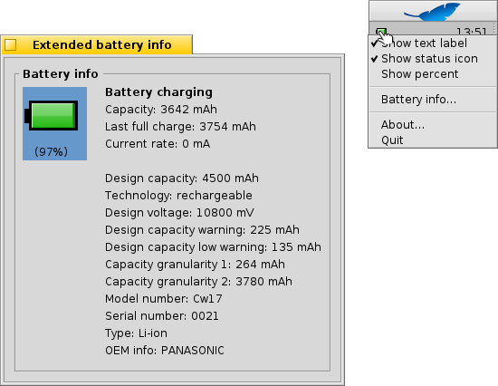

中文 ［中文］
中文 ［中文］ Français
Français Deutsch
Deutsch Italiano
Italiano Русский
Русский Español
Español Svenska
Svenska 日本語
日本語 Українська
Українська Português
Português Suomi
Suomi Slovenčina
Slovenčina Magyar
Magyar Português (Brazil)
Português (Brazil) English
English 电源状态
电源状态
| 桌面栏： | ||
| 位置： | /boot/system/apps/PowerStatus | |
| 设置： | ~/config/settings/PowerStatus settings |
PowerStatus 显示了电池电力信息，因此它仅适用于移动计算机。如果它未运行，启动小程序时，将会询问是否以窗口模式打开，或者停靠于桌面栏托盘。在窗口模式下，您可以通过自定义窗口尺寸来调节图标大小，并且可以使用 Replicant 控件将其拖至桌面。
不管安装在哪儿，它都可以通过右键菜单进行操作。
备注：PowerStatus 需要可运行的 ACPI 支持。
右键菜单提供了下面的选项：
| 以百分比或者剩余时间显示电池电量。 | ||
| 显示小程序图标。 | ||
| 切换电量显示模式，百分比或剩余时间（ 必须进行激活）。 | ||
| 在窗口中显示扩展电池信息。 | ||
| 显示 About 窗口。 | ||
| 退出 电源状态 小程序。 |
在 激活，电池充电时，电量显示于圆括号中。